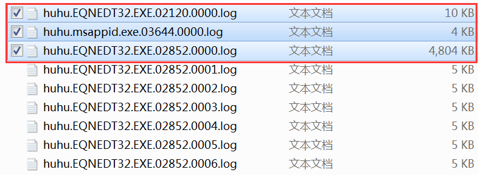
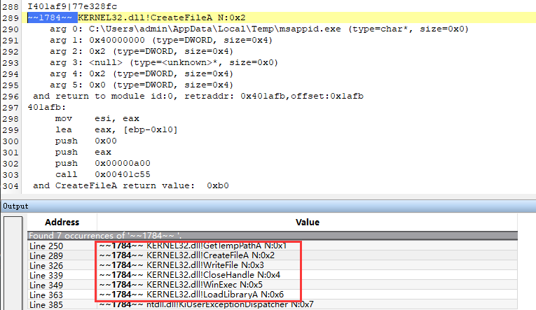
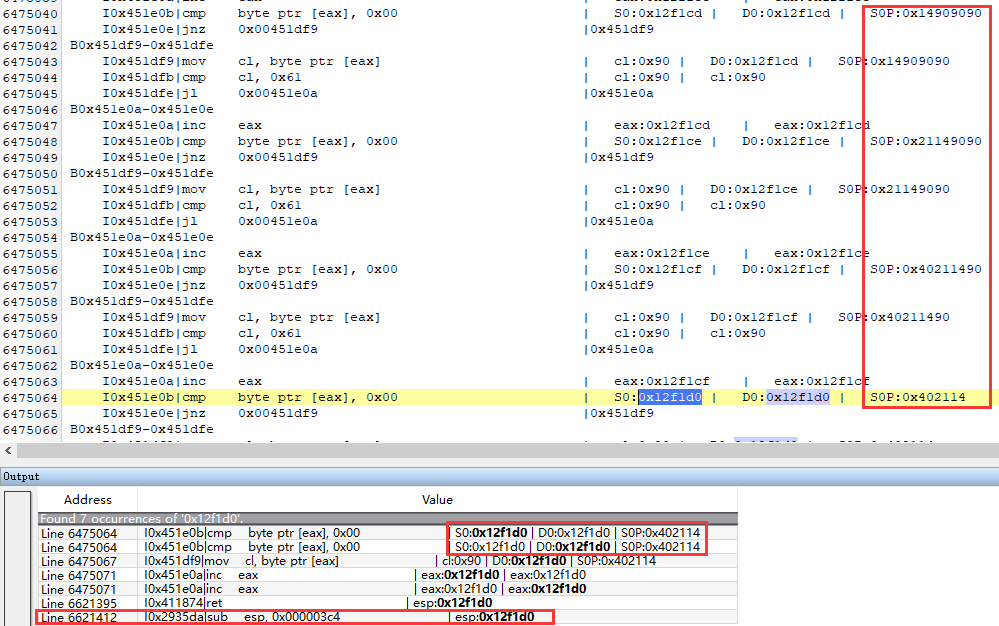
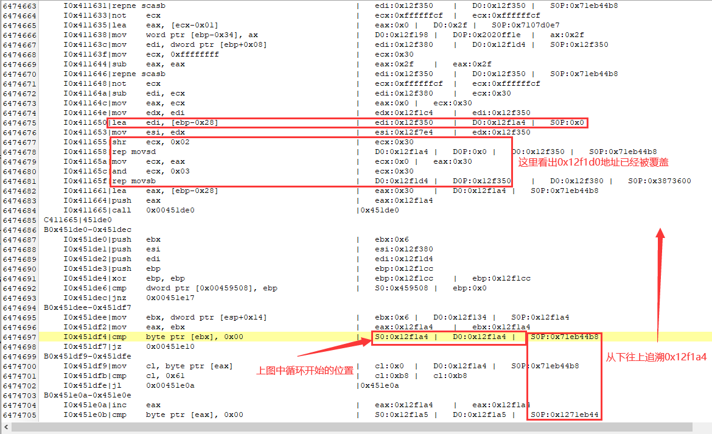
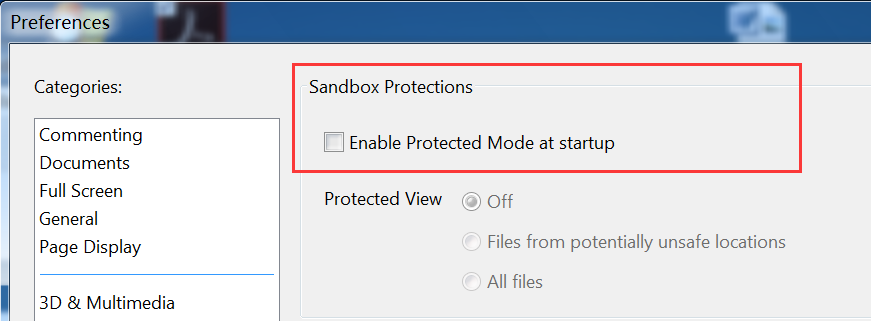

上一篇主要介绍hutrace的各个看着花里胡哨的功能，这里结合一些漏洞、样本的实例进行分析，日常工作见到的一些测试用例不方便公开，很多程序来自网上搜集，演示效果还不够好，而且本文主要目的是介绍hutrace功能用于辅助分析，对于用例的漏洞成因等不再介绍，暂时也确实没足够精力深入分析这些测试样例，网上也已经有比较多的文章了。。
1. 漏洞分析 介绍几个简单的漏洞Exp分析示例，演示hutrace在实战中的应用，漏洞成因暂不做更为深入分析，找的漏洞的例子其实不太多，像一些有符号信息程序或者可自己编译源码的如ie系列、chrome等浏览器程序，虽然可以使用脚本对hutrace的日志中地址的符号信息进行标注，但这样操作反而有点问题搞的复杂化，最差的情况下可以把hutrace的运行日志当作参照物掌握其执行流程，不用调试回溯即可反向定位到之前执行的代码流程。
1.1 CVE-2017-11882 office公式编辑器漏洞分析 样本来源：https://github.com/unamer/CVE-2017-11882
shellcode功能为重新创建一个傀儡进程EQNEDT32.EXE进程并注入、释放并执行一个3k大小的弹框程序。win7x32+office2010测试环境，执行以下命令：
1 2 C:\Users\admin\Desktop\bin>drconfig.exe -reg EQNEDT32.EXE -syswide_on -c hutracelib.dll -only_from_app -print_ret_addr -print_ins_info -logdir C:\Users\admin\Desktop\bin\ -config C:\Users\admin\Desktop\bin\hutrace.config WARNING: on Windows 7+, syswide_on relaxes system security by removing certain code signing requirements
这里没有使用之前hutrace.exe直接启动Word程序，因为公式编辑器进程EQNEDT32.EXE是通过RPC方式启动，而dynamorio的追踪子进程功能只能捕捉默认的CreateProcess等方式启动的子进程，独立的EQNEDT32.EXE进程无法追踪，但是可以使用dynamorio的自动附加功能，使用dynamorio中自带的drconfig.exe为EQNEDT32.EXE进程注册启动时自动注入dynamorio插件。
下面直接在测试环境使用word打开test.rtf文件，日志目录中生成的文件中我们只需要关注下面三个：

其中前两个是Shellcode执行记录的情况，而创建的傀儡进程EQNEDT32.EXE的trace日志文件huhu.EQNEDT32.EXE.02120.0000.log文件内容（从LoadlibraryA函数开始其实进程已经执行完主题功能，后面未严格处理漏洞现场环境导致进程崩溃退出了，msappid.exe功能简单只有一个弹框）：

Shellcode功能一览无遗，也比较简单，下面主要根据日志分析漏洞执行情况，搜索API执行情况，直接从trace的日志中API调用结果的最后开始向前追溯：
1 2 3 4 5 6 7 8 9 10 11 12 13 14 15 16 17 //省略部分010edit搜索的结果 Line 250203 8h ~~696~~ KERNEL32.dll!GlobalLock N:0x187d Line 250210 8h ~~696~~ KERNEL32.dll!GlobalUnlock N:0x187e Line 250227 8h ~~696~~ KERNEL32.dll!GlobalLock N:0x187f Line 250234 8h ~~696~~ KERNEL32.dll!GlobalUnlock N:0x1880 Line 250622 8h ~~696~~ KERNEL32.dll!CreateProcessA N:0x1881 <-------------这里 Line 250664 8h ~~696~~ KERNEL32.dll!WaitForDebugEvent N:0x1882 Line 250701 8h ~~696~~ KERNEL32.dll!GetThreadContext N:0x1883 Line 250719 8h ~~696~~ KERNEL32.dll!VirtualProtectEx N:0x1884 Line 250725 8h ~~696~~ KERNELBASE.dll!VirtualProtectEx N:0x1885 Line 250770 8h ~~696~~ KERNEL32.dll!WriteProcessMemory N:0x1886 Line 250776 8h ~~696~~ KERNELBASE.dll!WriteProcessMemory N:0x1887 Line 250797 8h ~~696~~ KERNEL32.dll!SetThreadContext N:0x1888 Line 250809 8h ~~696~~ KERNEL32.dll!DebugSetProcessKillOnExit N:0x1889 Line 250822 8h ~~696~~ KERNEL32.dll!ContinueDebugEvent N:0x188a Line 250835 8h ~~696~~ KERNEL32.dll!DebugActiveProcessStop N:0x188b Line 250846 8h ~~696~~ KERNEL32.dll!ExitProcess N:0x188c
很明显漏洞触发后最先执行的既是CreateProcessA函数，双击定位到相应的位置：
1 2 3 4 5 6 7 8 9 10 11 12 13 14 15 16 17 lea eax, [esp+0x30] mov dword ptr [esp+0x30], 0x454e5145 push eax push edx mov dword ptr [esp+0x3c], 0x32335444 mov dword ptr [esp+0x40], 0x4558452e mov byte ptr [esp+0x44], dl call ebx I6c6af6|77de2062 ~~696~~ KERNEL32.dll!CreateProcessA N:0x1881 arg 0: <null> (type=char*, size=0x0) arg 1: EQNEDT32.EXE (type=char*, size=0x0) arg 2: <null> (type=<unknown>*, size=0x0) arg 3: <null> (type=<unknown>*, size=0x0) arg 4: 0x0 (type=BOOL, size=0x4) arg 5: 0x2 (type=DWORD, size=0x4) and return to addr:0x6c6af8
继续往上翻代码：
1 2 3 4 5 6 7 8 9 10 11 12 13 14 15 16 17 18 19 20 21 22 23 24 25 411870: pop edi pop esi pop ebx leave ret R411874|402114 <-------------这里 402114: ret <-------------这里 R402114|12f350 <-------------这里 12f350: mov eax, 0x1271eb44 mov edx, 0x12345678 xor eax, edx mov ecx, dword ptr [eax] mov ecx, dword ptr [ecx] mov ecx, dword ptr [ecx] add cx, 0x3c jmp ecx J12f366|6c6974 6c6974: push ebp mov ebp, esp and esp, 0xf8 sub esp, 0x000003c4
这不明显就是溢出覆盖的返回地址嘛~有的Shellcode可能会故意清除已执行代码或者栈结构，有了trace记录则不会受这种情况影响，到了这里如果结合IDA可以很容易定位溢出位置，如果继续查看该日志文件可能信息不是很大了，而且溢出位置之前的部分代码并非第一次执行，所以trace的日志里不再打印实际的汇编指令，后面继续分析，不使用IDA非要找虐的话，也可以使用hutrace的print_ins_reg功能打印所有执行指令以及指令状态信息，把上面执行的命令print_ins_info替换为print_ins_reg再次执行trace过程，这样的trace过程就比较慢了，两分钟生成了约500兆的接近全部运行状态的日志文件（注意还不是全部状态哦，只是指令引用的寄存器及内存状态信息，不过大部分情况已经足够了），虽然运行效率低点，好消息是不用像TTD等工具那样反复重放操作了，如果结合IDA的话可以在对处理流程更了解的基础上，设置只处理trace的起始地址，划分关注的代码这样trace的效率更高。
我们下面演示不用调试器、IDA分析的情况下，利用无脑全流程trace的方式分析该漏洞，通过记录的指令指令状态信息定位溢出点，首先根据溢出覆盖的返回地址信息：
1 2 I0x411874|ret | esp:0x12f1d0 I0x402114|ret | esp:0x12f1d4
日志文件中搜索0x12f1d0：

看到图中左侧框中的数据变化规律可以看出在循环处理栈中的数据，继续往上翻日志：

这不就找到溢出点位置了，后面可以再据此根据rtf文件结构、shellcode在rtf中的位置、搜索rtf数据在trace日志文件中的处理流程等等，探究漏洞成因，结合IDA的话其实基本也可以做到不用调试就能澄清漏洞细节了，这里我就不继续了。。。
补充说明1 drconfig.exe -reg EQNEDT32.EXE -syswide_on -ops "-no_follow_children" -c hutracelib.dll -only_from_app -print_ret_addr -print_ins_info -logdir C:\Users\admin\Desktop\bin\ -config C:\Users\admin\Desktop\bin\hutrace.config
1.2 CVE-2018-4990 adobe pdf 漏洞载荷分析 继续搞个pdf的洞简单分析下，首先关闭Adobe的沙盒保护：

不会影响漏洞触发，但是开启该机制会影响hutrace的trace操作，关闭之后执行下述命令指定对漏洞模块EScript.api的追踪：
1 C:\Users\admin\Desktop\bin>hutrace.exe -only_from_app -print_ret_addr -print_ins_info -trace_to_librarys EScript.api -- "C:\Program Files\Adobe\Acrobat Reader DC\Reader\AcroRd32.exe" C:\Users\admin\Desktop\CVE-2018-4990-modify.pdf
漏洞的Shellcode为一个简单的MessagexBox弹框，大概三分钟的时间形成了近20个记录的线程日志，其中最大的日志文件约1.9G，这还不包含寄存器等状态信息，首先搜索其API执行情况，从后往前查看或者直接搜索MessageBox：
1 2 3 4 5 6 7 8 9 10 11 12 13 14 15 16 //010edit搜索的部分结果 Line 102653393 9h ~~3600~~ MSVCR120.dll!strcmp N:0x10533a Line 102653416 9h ~~3600~~ MSVCR120.dll!strcmp N:0x10533b Line 102653435 9h ~~3600~~ MSVCR120.dll!strcmp N:0x10533c Line 102653516 9h ~~3600~~ KERNEL32.dll!VirtualAlloc N:0x10533d Line 102653522 9h ~~3600~~ KERNELBASE.dll!VirtualAlloc N:0x10533e Line 102653597 9h ~~3600~~ KERNEL32.dll!GetProcAddress N:0x10533f Line 102653601 9h ~~3600~~ KERNELBASE.dll!GetProcAddress N:0x105340 Line 102653616 9h ~~3600~~ KERNEL32.dll!LoadLibraryA N:0x105341 Line 102653631 9h ~~3600~~ KERNEL32.dll!GetProcAddress N:0x105342 Line 102653635 9h ~~3600~~ KERNELBASE.dll!GetProcAddress N:0x105343 Line 102653654 9h ~~3600~~ USER32.dll!MessageBoxA N:0x105344 Line 102653672 9h ~~3600~~ KERNEL32.dll!GetProcAddress N:0x105345 Line 102653676 9h ~~3600~~ KERNELBASE.dll!GetProcAddress N:0x105346 Line 102653686 9h ~~3600~~ KERNEL32.dll!ExitProcess N:0x105347 Line 102653728 9h ~~3600~~ ntdll.dll!RtlEnterCriticalSection N:0x105348
查看VirtualAlloc函数附近的代码：
1 2 3 4 5 6 7 8 9 10 11 12 13 14 15 16 17 18 19 20 21 22 23 24 25 26 27 28 29 30 31 32 33 34 35 36 37 38 39 40 41 42 43 44 45 46 47 48 49 50 51 52 53 54 55 56 57 58 59 60 61 62 63 64 65 66 67 68 69 70 71 72 73 74 75 76 77 78 79 R23802a02|2383af18 R2383af18|23861a4e R23861a5d|23858051 R2385806e|238c18e9 I238c18f4|23929f00 23929f00: xchg esp, eax ret R23929f01|238c7e76 238c7e76: pop esp pop ecx pop ecx pop ebp ret 0x0004 R238c7e7a|23882803 23882803: ret R23882803|23882802 23882802: pop ecx ret R23882803|23811784 R23811786|2398af26 2398af26: xchg esi, eax ret R2398af27|23818000 23818000: pop ebp ret R23818001|2390f282 2390f282: pop ebx ret R2390f283|23882802 R23882803|238095c3 238095c3: pop edi ret R238095c4|2395b084 2395b084: pop edx ret R2395b085|23978e07 23978e07: pop eax ret R23978e08|23841ec9 23841ec9: pushad ret R23841eca|238095c4 238095c4: ret R238095c4|77e305f4 ~~3600~~ KERNEL32.dll!VirtualAlloc N:0x10533d arg 0: 0x0d1300b0 => 0x00000000 (type=void*, size=0x0) arg 1: 0x10201 (type=size_t, size=0x4) arg 2: 0x1000 (type=DWORD, size=0x4) arg 3: 0x40 (type=DWORD, size=0x4) and return to module id:54, retraddr: 0x23823aaa,offset:0x23aaa ~~3600~~ KERNELBASE.dll!VirtualAlloc N:0x10533e arg 0: 0x0d1300b0 => 0x00000000 (type=void*, size=0x0) arg 1: 0x10201 (type=size_t, size=0x4) arg 2: 0x1000 (type=DWORD, size=0x4) arg 3: 0x40 (type=DWORD, size=0x4) and return to module id:54, retraddr: 0x23823aaa,offset:0x23aaa 23823aaa: jmp esp J23823aaa|d1300ac and VirtualAlloc return value: 0xd130000 and VirtualAlloc return value: 0xd130000 d1300ac: add byte ptr [eax], al add byte ptr [eax], al nop nop nop
这不就是rop嘛，如果只关注该exp的功能的话可以往后分析其Shellcode功能，分析漏洞成因的话当然到这里还不算完，日志文件里记录的还有流程信息、内存API申请释放等的结果信息可以辅助分析成因，如果继续跟上一个漏洞一样无脑全指令状态记录的话我曾经测试过虚拟机里大概需要五六个小时，日志文件70多个G。。。虽然已经比调试器trace等快得多了，但是trace的日志太大很影响检索，也没有必要，可以考虑在一定的分析基础上再使用hutrace对trace的日志文件进行裁剪或者对漏洞成因进行一定的探究后再指定起始地址开始进行寄存器状态等的记录，也可以用Windbg的TTD、Windbg开页堆等等快速定位，手段比较多，hutrace毕竟只是一个trace工具，不是一个智能全自动化分析工具，纯粹依赖hutrace的话可能有的场景下还不如windbg的几条命令快一点，根据实际情况能辅助到分析过程即可。
2. 病毒样本分析 看雪上随便找了一个apt28组织的样本，直接hutrace上去怼：
1 C:\Users\admin\Desktop\bin>hutrace.exe -only_from_app -print_ret_addr -print_ins_info -config C:\Users\admin\Desktop\bin\hutrace-apt28.config -- Win32.SofacyCarberp.bin.exe
在得到的trace日志中可得：
1 2 3 4 5 6 7 8 9 10 11 12 13 14 15 16 17 18 19 20 21 22 23 24 25 26 27 28 29 30 31 ~~2948~~ KERNEL32.dll!CreateFileW N:0x1b4 arg 0: C:\Users\admin\AppData\Local\cdnver.dll (type=wchar_t*, size=0x0) arg 1: 0x4 (type=DWORD, size=0x4) arg 2: 0x2 (type=DWORD, size=0x4) arg 3: <null> (type=<unknown>*, size=0x0) arg 4: 0x2 (type=DWORD, size=0x4) arg 5: 0x2 (type=DWORD, size=0x4) and return to module id:0, retraddr: 0x401630,offset:0x1630 ...... //对于一些使用完后自删除的文件可以通过解析trace日志将其保存，也可以使用hutrace的dump功能。 ~~2948~~ KERNEL32.dll!WriteFile N:0x1b8 arg 0: 0x90 (type=HANDLE, size=0x4) arg 1: 0x22f098 000000: 4d 5a 90 00 03 00 00 00 04 00 00 00 ff ff 00 00 MZ.............. 000010: b8 00 00 00 00 00 00 00 40 00 00 00 00 00 00 00 ........@....... 000020: 00 00 00 00 00 00 00 00 00 00 00 00 00 00 00 00 ................ 000030: 00 00 00 00 00 00 00 00 00 00 00 00 d8 00 00 00 ................ 000040: 0e 1f ba 0e 00 b4 09 cd 21 b8 01 4c cd 21 54 68 ........!..L.!Th 000050: 69 73 20 70 72 6f 67 72 61 6d 20 63 61 6e 6e 6f is program canno 000060: 74 20 62 65 20 72 75 6e 20 69 6e 20 44 4f 53 20 t be run in DOS 000070: 6d 6f 64 65 2e 0d 0d 0a 24 00 00 00 00 00 00 00 mode....$....... 000080: 21 26 0a 2b 65 47 64 78 65 47 64 78 65 47 64 78 !&.+eGdxeGdxeGdx ...... ~~2948~~ SHELL32.dll!ShellExecuteW N:0x35b arg 0: 0x0 (type=DWORD, size=0x4) arg 1: open (type=wchar_t*, size=0x0) arg 2: RunDll32.exe (type=wchar_t*, size=0x0) arg 3: "C:\Users\admin\AppData\Local\cdnver.dll",#1 (type=wchar_t*, size=0x0) arg 4: <null> (type=wchar_t*, size=0x0) arg 5: 0x0 (type=DWORD, size=0x4) and return to module id:0, retraddr: 0x40183d,offset:0x183d
恢复快照设置自动追踪rundll32.exe,并指定trace释放的cdnver.dll模块的行为：
1 C:\Users\admin\Desktop\bin>drconfig.exe -reg rundll32.exe -syswide_on -c hutracelib.dll -only_from_app -print_ret_addr -print_ins_info -trace_to_librarys cdnver.dll -logdir C:\Users\admin\Desktop\bin\ -config C:\Users\admin\Desktop\bin\hutrace-apt28.config
截取部分日志结果：
1 2 3 4 5 6 7 8 9 10 11 12 13 14 15 16 17 18 19 20 21 22 23 24 25 26 27 28 29 30 31 32 33 34 35 36 37 38 39 40 41 42 43 44 45 46 47 48 49 50 51 52 53 54 55 56 57 58 59 ~~2620~~ KERNEL32.dll!CreateMutexA N:0x50 arg 0: <null> (type=<unknown>*, size=0x0) arg 1: 0x1 (type=BOOL, size=0x4) arg 2: vgekW8b1st6yjzPA9fewB70o7KC (type=char*, size=0x0) and return to module id:39, retraddr: 0x612d1e,offset:0x2d1e ~~2620~~ KERNELBASE.dll!CreateMutexA N:0x51 arg 0: <null> (type=<unknown>*, size=0x0) arg 1: 0x1 (type=BOOL, size=0x4) arg 2: vgekW8b1st6yjzPA9fewB70o7KC (type=char*, size=0x0) and return to module id:39, retraddr: 0x612d1e,offset:0x2d1e 612d1e: <---- 打印有些乱序，不太美观，无伤大雅，懒得改了 mov edi, eax call dword ptr [0x006170b8] and CreateMutexA return value: 0x120 <----返回值应该比前两条指令汇编信息先打印的... and CreateMutexA return value: 0x120 ...... ~~2620~~ urlmon.dll!ObtainUserAgentString N:0x89 arg 0: 0x0 (type=DWORD, size=0x4) arg 2: 0x0072ff20 => 0xa2 (type=DWORD*, size=0x4) and return to module id:39, retraddr: 0x6136fb,offset:0x36fb and ObtainUserAgentString return value: 0x0 arg 1: Mozilla/4.0 (compatible; MSIE 7.0; Windows NT 6.1; Trident/4.0; SLCC2; .NET CLR 2.0.50727; .NET CLR 3.5.30729; .NET CLR 3.0.30729; Media Center PC 6.0; .NET4.0C) (type=char*, size=0x0) ...... ~~2620~~ ADVAPI32.dll!RegOpenKeyExA N:0x96 arg 0: 0x80000002 (type=<unknown>, size=0x0) arg 1: Software\Microsoft\Windows\CurrentVersion\Internet Settings\Servers (type=char*, size=0x0) arg 2: 0x0 (type=DWORD, size=0x4) arg 3: 0x00000001 (type=<unknown>, size=0x0) and return to module id:39, retraddr: 0x615279,offset:0x5279 ...... ~~2620~~ WININET.dll!InternetOpenA N:0xbc arg 0: Mozilla/4.0 (compatible; MSIE 7.0; Windows NT 6.1; Trident/4.0; SLCC2; .NET CLR 2.0.50727; .NET CLR 3.5.30729; .NET CLR 3.0.30729; Media Center PC 6.0; .NET4.0C) (type=char*, size=0x0) arg 1: 0x0 (type=DWORD, size=0x4) arg 2: <null> (type=char*, size=0x0) arg 3: <null> (type=char*, size=0x0) arg 4: 0x0 (type=DWORD, size=0x4) and return to module id:39, retraddr: 0x61485c,offset:0x485c and InternetOpenA return value: 0xcc0004 ...... ~~2620~~ WININET.dll!InternetConnectA N:0xbd arg 0: 0xcc0004 (type=DWORD, size=0x4) arg 1: google.com (type=char*, size=0x0) arg 2: 0x1bb (type=WORD, size=0x2) arg 3: <null> (type=char*, size=0x0) arg 4: <null> (type=char*, size=0x0) arg 5: 0x3 (type=DWORD, size=0x4) and return to module id:39, retraddr: 0x614873,offset:0x4873 and InternetConnectA return value: 0xcc0008 ...... ~~2620~~ WININET.dll!HttpOpenRequestA N:0xe65 arg 0: 0xcc0008 (type=DWORD, size=0x4) arg 1: POST (type=char*, size=0x0) arg 2: /ffff/ffff/ffff/ffff/UUUUUU.vnd.radisys.msml-basic-layout/?U=R3H9gETPMuF94yrwJfA= (type=char*, size=0x0) arg 3: <null> (type=char*, size=0x0) arg 4: <null> (type=char*, size=0x0) arg 5: <null> (type=char*, size=0x0) and return to module id:39, retraddr: 0x6148a3,offset:0x48a3 and HttpOpenRequestA return value: 0xcc000c ......
该样本实际是先使用谷歌域名测试下网络联通性，后面还会根据解析出的真正C2服务器域名信息，进行交替访问，不过我虚拟机里没联网，没有记录其与真正C2服务器域名的通信行为。
常规的API Monitor工具只是记录API函数的调用行为，而hutrace则更加灵活，虽然上述例子中其实也是仅对样本的API调用情况进行了查看，实际中是可以对trace日志中更细粒度的基本块、指令、寄存器及内存情况进行分析，例如根据日志中打印的汇编指令情况可以很快澄清API函数中参数来源等，对于病毒样本类的分析使用hutrace对性能影响一般比较小，上述例子生成的trace日志加一起也只有几十兆，也完全可以使用打印寄存器和内存功能，整个分析过程可以看到完全可以不需调试器的参与，在trace日志中进行特定代码的检索也比较便捷，也可以自己做解析二次处理，在下面的插件例子中会介绍一些更个性化的应用~
3. Windows Syscall记录 一些木马样本、Shellcode如cs等提供syscall方式躲避杀软以及一部分AV/EDR的功能，给分析也带来了一定的难度，hutrace中添加了syscall记录的功能，可以使用-print_syscall选项开启，但是Windows上系统版本差异较大，测试中dynamorio的内置获取系统版本的函数可能会很奇怪的获取失败，如果获取失败的话hutrace会从hutrace.config文件中读取自定义设置的系统版本号进行对应版本syscall table的选择，syscall table列表提取自drstrace项目（支持到win10 1803），如果内置获取系统版本的函数调用失败且hutrace.config中未设置自定义的系统版本，会使用hutrace程序中默认设置的win7系统的系统调用表对目标程序运行时的syscall进行标记。
1 2 3 4 5 6 7 8 9 10 11 12 13 14 15 16 17 18 19 20 21 22 23 //hutrace.config中设置添加下述内容设置系统版本 winver|61 //可设置的系统版本号范围来自dr_tools.h文件中的定义 //DR_WINDOWS_VERSION_10_1803 = 105, //DR_WINDOWS_VERSION_10_1709 = 104, //DR_WINDOWS_VERSION_10_1703 = 103, //DR_WINDOWS_VERSION_10_1607 = 102, //DR_WINDOWS_VERSION_10_1511 = 101, //DR_WINDOWS_VERSION_10 = 100, //DR_WINDOWS_VERSION_8_1 = 63, //DR_WINDOWS_VERSION_2012_R2 = DR_WINDOWS_VERSION_8_1, //DR_WINDOWS_VERSION_8 = 62, //DR_WINDOWS_VERSION_2012 = DR_WINDOWS_VERSION_8, //DR_WINDOWS_VERSION_7 = 61, //DR_WINDOWS_VERSION_2008_R2 = DR_WINDOWS_VERSION_7, //DR_WINDOWS_VERSION_VISTA = 60, //DR_WINDOWS_VERSION_2008 = DR_WINDOWS_VERSION_VISTA, //DR_WINDOWS_VERSION_2003 = 52, //DR_WINDOWS_VERSION_XP_X64 = DR_WINDOWS_VERSION_2003, //DR_WINDOWS_VERSION_XP = 51, //DR_WINDOWS_VERSION_2000 = 50, //DR_WINDOWS_VERSION_NT = 40,
hutrace.config中不设置系统调用对应的参数类型的话，默认只打印syscall的名称，如果遇到感兴趣的syscall需要记录，可以在hutrace.config进行设置如下（以NtCreateKey为例）：
1 2 3 4 5 //第五个参数为UNICODE_STRING结构体的定义，其中自己多加的结构体中的int型为字节对齐的填充，参见第一篇结构体打印中的介绍。在使用结构体类型时必须指定^NUM或者^ARG确定结构体的大小和数目 int|syscall_NtCreateKey|VOID|VOID|VOID|VOID|struct_ptr{WORD.WORD.int.wchar*}^NUM1|VOID|VOID //开始记录 C:\Users\huhu\Desktop\bin64>hutrace.exe -only_from_app -print_ret_addr -print_ins_info -print_syscall -- nc64.exe -lvp 8080
得到的日志中的syscall记录：
1 2 3 4 5 6 7 8 9 10 11 12 13 14 15 16 17 18 19 20 21 ~~880~~ S|syscall_NtAllocateVirtualMemory_21 N:0x268 //不设置对应参数类型默认只打印syscall的名称 and syscall_NtAllocateVirtualMemory return ~~880~~ S|syscall_NtCreateEvent_69 N:0x269 and syscall_NtCreateEvent return ~~880~~ S|syscall_NtQueryKey_19 N:0x26a and syscall_NtQueryKey return ~~880~~ S|syscall_NtCreateKey_26 N:0x26b arg 0: 0x000000000022ef68 (type=void, size=0x0) arg 1: 0x0000000000020019 (type=void, size=0x0) arg 2: 0x000000000022ef88 (type=void, size=0x0) arg 3: 0x0000000000000000 (type=void, size=0x0) arg 4: 0x000000000022f330 and Struct Begin: arg 0: 0xa (type=WORD, size=0x2) arg 1: 0xc (type=WORD, size=0x2) arg 2: 0x0 (type=int, size=0x4) arg 3: Class (type=wchar_t*, size=0x0) and Struct End (type=struct_ptr{WORD.WORD.int.wchar*}^NUM1*, size=0x1) arg 5: 0x0000000000000000 (type=void, size=0x0) and syscall_NtCreateKey return
在Windows上界面程序一般没必要开启syscall记录，非界面程序的记录需求也比较少，默认是记录程序中所有的syscall调用，不会过滤是否为目标程序本身或者系统函数中的调用，导致trace的日志量也会比较大。
4. 任意地址HOOK：Windows平台hutrace插件编写
调试时经常遇到需要对特定指令或数据进行运行时修改的情况，hutrace本身提供了一个简易patch的功能，但是对于一些复杂场景显得处理能力较弱，为了实现功能更强大的自定义代码注入功能，hutrace添加了插件功能，可基本实现在程序的任意运行状态修改程序运行信息，下面以一个固定VirtualAlloc内存申请基址的小需求为例，利用提供的hutrace的插件模板很容易即可实现。首先看一个演示的注入程序：
1 C:\Users\admin\Desktop\bin>hutrace.exe -only_from_app -print_ret_addr -print_ins_info -- inject.exe
主体功能为注入rundll32.exe弹出计算器的Shellcode（VirtualAllocEx在rundll32.exe内存空间申请0x800大小内存），为了演示，自身也加了一段申请0x1234大小的内存的代码：
1 2 3 4 5 6 7 8 9 10 11 12 13 14 15 16 17 18 19 20 21 22 23 24 25 26 27 28 29 30 31 32 33 34 35 36 37 38 39 40 I4012a2|77e305f4 <-------VirtualAlloc函数地址 ~~2808~~ KERNEL32.dll!VirtualAlloc N:0x1bd arg 0: 0x00000000 => 0x00000000 (type=void*, size=0x0) arg 1: 0x1234 (type=size_t, size=0x4) arg 2: 0x1000 (type=DWORD, size=0x4) arg 3: 0x4 (type=DWORD, size=0x4) and return to module id:0, retraddr: 0x4012a8,offset:0x12a8 ~~2808~~ KERNELBASE.dll!VirtualAlloc N:0x1be arg 0: 0x00000000 => 0x00000000 (type=void*, size=0x0) arg 1: 0x1234 (type=size_t, size=0x4) arg 2: 0x1000 (type=DWORD, size=0x4) arg 3: 0x4 (type=DWORD, size=0x4) and return to module id:0, retraddr: 0x4012a8,offset:0x12a8 ... and VirtualAlloc return value: 0x160000 ... ~~2808~~ KERNEL32.dll!CreateProcessA N:0x1bf arg 0: <null> (type=char*, size=0x0) arg 1: c:\windows\system32\rundll32.exe (type=char*, size=0x0) arg 2: <null> (type=<unknown>*, size=0x0) arg 3: <null> (type=<unknown>*, size=0x0) arg 4: 0x0 (type=BOOL, size=0x4) arg 5: 0x4 (type=DWORD, size=0x4) and return to module id:0, retraddr: 0x4012e7,offset:0x12e7 4012e7: push 0x00414558 call 0x00402149 and CreateProcessA return value: 0x1 arg 1: c:\windows\system32\rundll32.exe (type=char*, size=0x0) ... I401325|77e1b42c <-------VirtualAllocEx函数地址 ~~2808~~ KERNEL32.dll!VirtualAllocEx N:0x1da arg 0: 0x58 (type=HANDLE, size=0x4) arg 1: 0x00000000 => 0x00000000 (type=void*, size=0x0) arg 2: 0x800 (type=size_t, size=0x4) arg 3: 0x3000 (type=DWORD, size=0x4) arg 4: 0x40 (type=DWORD, size=0x4) and return to module id:0, retraddr: 0x40132b,offset:0x132b ... and VirtualAllocEx return value: 0xb0000
下面我们来使用插件把程序本身申请0x1234大小的内存地址固定为0x18000000，进程注入的Shellcode内存地址固定为0x19000000，首先在hutrace.config配置文件中添加以下内容：
1 2 hook|null|0x77e305f4|myDynamorioPlugin.dll|f_hookpre|f_hookpost hook|null|0x77e1b42c|myDynamorioPlugin.dll|f_hookprex|f_hookpostx
其中null代表不使用模块名方式寻址，也即是指示后续的0x77e305f4、0x77e1b42c为绝对地址，分别为KERNEL32.dll模块VirtualAlloc、VirtualAllocEx函数地址，在上面的记录日志里也有体现，在我虚拟机中设置了关闭ASLR,当然只要不重启系统有的dll地址也不会变化，以第一条内容为例，意思是在程序执行到0x77e305f4地址时加载自定义的插件myDynamorioPlugin.dll，并且分别在该地址对应的函数执行前后分别执行插件中的f_hookpre、f_hookpost导出函数（注意并非该地址指令执行前后，如果该地址对应的并非一个函数，可以设置f_hookpost为null，否则可能会导致程序崩溃）。
VirtualAllocEx函数对应的f_hookprex、f_hookpostx函数实现类似。功能为固定返回0x19000000的内存地址，不再赘述，注意参数顺序即可，可见附件中工程代码，下面看下hutrace插件模板中对应的f_hookpre、f_hookpost函数实现：
1 2 3 4 5 6 7 8 9 10 11 12 13 14 15 16 17 18 19 20 21 22 23 24 25 26 27 28 29 30 31 32 33 34 35 36 37 38 reg_t my_0x1234_flag = 0; reg_t my_newmem_0x1234 = 0; reg_t my_newsize_0x1234 = 0; MYDYNAMORIOPLUGIN_API reg_t f_hookpre(file_t outf, dr_mcontext_t *mc, reg_t ret_addr) { reg_t m_arg1 = my_getarg(mc, 1); reg_t m_arg2 = my_getarg(mc, 2); reg_t m_arg3 = my_getarg(mc, 3); my_fprintf(outf, "[hook]:arg_1: "PIFMT" \n", m_arg1); my_fprintf(outf, "[hook]:arg_2: "PIFMT"\n", m_arg2); my_fprintf(outf, "[hook]:arg_3: "PIFMT"\n", m_arg3); my_fprintf(outf, "[hook]:arg_4: "PIFMT"\n", my_getarg(mc, 4)); my_fprintf(outf, "[hook]:ret_addr: "PIFMT" \n", ret_addr); if (m_arg2 == 0x1234) { my_newmem_0x1234 = (SIZE_T)VirtualAlloc((LPVOID)0x18000000, m_arg2, MEM_RESERVE | MEM_COMMIT, PAGE_EXECUTE_READWRITE); my_newsize_0x1234 = m_arg2; my_0x1234_flag = TRUE; } return 0; } MYDYNAMORIOPLUGIN_API reg_t f_hookpost(file_t outf, dr_mcontext_t *mc, reg_t ret_val) { //ret_val = 0xffffffff; if (my_0x1234_flag) { my_fprintf(outf, "[hook]:my_newmem_0x1234: "PIFMT" \n", my_newmem_0x1234); VirtualFree((LPVOID)ret_val, my_newsize_0x1234, MEM_DECOMMIT); my_0x1234_flag = false; return my_newmem_0x1234; } my_fprintf(outf, "[hook]:ret_val: "PIFMT" \n", ret_val); return ret_val; }
写的比较简陋，也没有严格处理内存申请失败等等情况，仅作演示用，my_fprintf（写入到trace日志中）、my_getarg（按照API调用约定获取参数的值）为模板中已经实现好的函数，在f_hookpre、f_hookpost函数中可以对任意寄存器（利用传进来的mc参数）、内存进行修改，也可以调用其它API函数。
下面把生成的插件放置到hutrace同目录下，再次trace目标进程inject.exe:
1 C:\Users\admin\Desktop\bin>hutrace.exe -only_from_app -print_ret_addr -print_ins_info -- inject.exe
查看日志中的结果：
1 2 3 4 5 6 7 8 9 10 11 12 13 14 15 16 17 18 19 20 21 22 23 24 25 26 27 28 29 30 31 32 33 34 35 36 37 38 39 I4012c4|77e305f4 hook_plugin:myDynamorioPlugin.dll!0x350000 hook_func:f_hookpre!0x351030 <---hutrace输出的调试信息 hook_entry null!0x77e305f4 to myDynamorioPlugin.dll!f_hookpre <---hutrace输出的调试信息 [hook]:arg_1: 0 <-----插件中my_fprintf函数的输出信息 [hook]:arg_2: 1234 [hook]:arg_3: 1000 [hook]:arg_4: 4 [hook]:ret_addr: 4012ca ~~892~~ KERNELBASE.dll!VirtualAlloc N:0x1bd arg 0: 0x00000000 => 0x00000000 (type=void*, size=0x0) arg 1: 0x1234 (type=size_t, size=0x4) arg 2: 0x1000 (type=DWORD, size=0x4) arg 3: 0x4 (type=DWORD, size=0x4) and return to module id:0, retraddr: 0x4012ca,offset:0x12ca and VirtualAlloc return value: 0x160000 hook_plugin:myDynamorioPlugin.dll!0x350000 hook_func:f_hookpost!0x3510e0 <---hutrace输出的调试信息 hook_end null!0x77e305f4 to myDynamorioPlugin.dll!f_hookpost <---hutrace输出的调试信息 [hook]:my_newmem_0x1234: 18000000 ... I40131f|77e1b42c hook_plugin:myDynamorioPlugin.dll!0x350000 hook_func:f_hookprex!0x351150 hook_entry null!0x77e1b42c to myDynamorioPlugin.dll!f_hookprex [hook]:arg_1: 5c [hook]:arg_2: 0 [hook]:arg_3: 800 [hook]:arg_4: 3000 [hook]:arg_5: 40 [hook]:ret_addr: 401325 ~~892~~ KERNELBASE.dll!VirtualAllocEx N:0x1c0 arg 0: 0x5c (type=HANDLE, size=0x4) arg 1: 0x00000000 => 0x00000000 (type=void*, size=0x0) arg 2: 0x800 (type=size_t, size=0x4) arg 3: 0x3000 (type=DWORD, size=0x4) arg 4: 0x40 (type=DWORD, size=0x4) and return to module id:0, retraddr: 0x401325,offset:0x1325 and VirtualAllocEx return value: 0xc0000 hook_plugin:myDynamorioPlugin.dll!0x350000 hook_func:f_hookpostx!0x351220 hook_end null!0x77e1b42c to myDynamorioPlugin.dll!f_hookpostx [hook]:my_newmem_0x800: 19000000
可以同时trace下rundll32查看其注入的shellcode（msf生成的shellcode）确认其代码地址确实已经被替换成自己指定的值0x19000000，需要使用drconfig方式哦，hutrace的follow_children参数有时无法自动trace这类注入进程：
1 2 3 4 5 6 7 8 9 10 11 12 13 14 15 16 17 18 19000000: mov edi, esp fcmovnb st0, st1 fnstenv [edi-0x0c] 19000007: pop ebp push ebp pop ecx dec ecx dec ecx dec ecx dec ecx dec ecx dec ecx dec ecx dec ecx dec ecx //省略部分代码
这个需求的实现能够同时支撑hutrace的其它功能（record_start_addr的指定地址开始记录功能等），不过使用时需要注意会同时导致小问题，Hook的地址与API信息打印、简易Patch功能等功能冲突，如上例对VirtualAlloc函数HOOK之后即不会再打印其KERNEL32.dll模块里VirtualAlloc参数信息，当然KERNELBASE.dll的还是会打印。
另外hutrace.config文件中中使用hook功能时同时支持以下语法：
1 2 3 4 5 6 7 8 hook|null|0x7612efa2|myDynamorioPlugin.dll|f_hookpre|f_hookpost hook|null|0x7612f273|myDynamorioPlugin.dll|f_hookpre1|null hook|test.exe|0x101c|myDynamorioPlugin.dll|f_hookpre|null hook|test.exe|0x102A|myDynamorioPlugin.dll|f_hookpre|f_hookpost hook|user32.dll|MessageBoxA|myDynamorioPlugin.dll|f_hookpre|f_hookpost hook|user32.dll|MessageBoxA+4|myDynamorioPlugin.dll|f_hookpre|f_hookpost
注意使用hook功能时kernel32.dll、kernelbase.dll的地址不能写成上述user32.dll|MessageBoxA、test.exe|0x101c的形式，直接写成绝对地址，因为该插件实际上是作为dynamroio插件运行，常规获取user32.dll的方式获取的kernel32.dll地址实际上并非目标进程中对应的地址，可以使用processexplorer查看目标进程实际上是加载了两个kernel32.dll的，而且在这种情况下实际获取的VirtualAlloc函数地址也有其它问题，不再展开描述了，但是也正是如此，hook功能中执行调用API函数才不会对trace目标进程造成影响，只是需要注意避免出现上述获取kernel32.dll地址问题。
5. 总结
dynamorio 8.0及以上版本编译的hutrace程序可以在Win10上运行，然而我自己测试的Win10本机运行hutrace记录的效率还不如自己的2核2g内存的“胜七”虚拟机，不知道是什么鬼原因。。。
hutrace源码近期暂先不发布呀，其实目前功能已经比较完善了，应该用不到改源码加啥功能，没啥技术含量，水平比较弱，写的比较随意，抽空把辣眼睛的地方改改少挨点骂。
另外对于一些带调试信息的程序，可以根据记录的trace日志情况，编写IDA脚本对其符号信息等进行标注，这里不做展开说明了~自己写的不多，也比较简陋。
对于一些日志中记录的中文等字符串信息，如在hutrace.config中设置char*类型参数打印，需要在010edit中设置简中字符集才能正常显示。